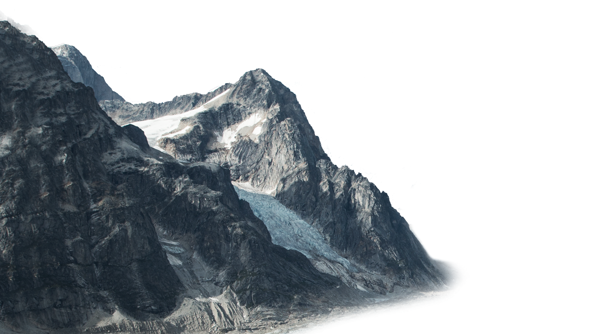
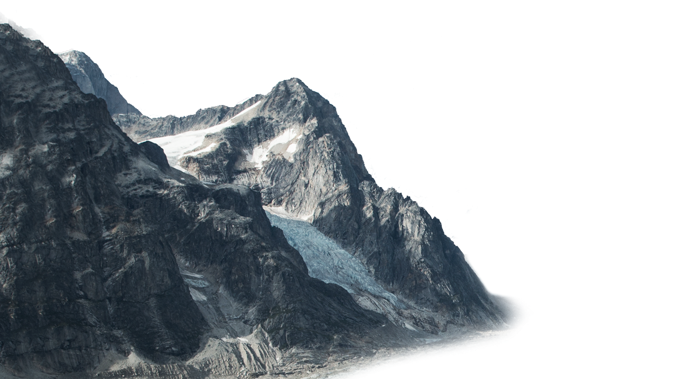

About
Char Dham (Devanagari: चार धाम) (literally: 'the four abodes/seats') are the names of four pilgrimage places in India that are widely revered by Hindus. They are: Badrinath, Dwarka, Jagannath Puri, and Rameshwaram.
The Char Dham defined by Adi Shankaracharya consists of two Vaishnavite, one Shaivite, and one mixed site. Earlier known as Chota Char Dham or 'Little' Char Dham to differentiate them from the bigger circuit of Char Dham sites, after the mid-20th century they themselves started being called the Char Dham. Today, the term "Char Dham" usually refers to the all-denomination Himalayan Char Dham.
The Char Dham are often considered the most revered sites for Hindus that have to be visited in one's lifetime.
History
The great 8th century reformer and philosopher Shankaracharya (Adi Sankara) was prominently involved in reviving the Hindu Dharma in India (Bharat). He travelled throughout the country and grouped the four sacred places Badrinath, Rameshwaram, Puri and Dwarka as the Char Dham which are dedicated to the Vishnu Avatars (incarnations). Geographically speaking the char dham make a perfect square with Badrinath and Rameswaram falling on same longitude and Dwarka(old) and Puri on same latitude, representing the farthest north east west and south points of India( at that time, before coastlines changed).
|
Pilgrimage details
Puri
Puri located at the east, is located in the state of Odisha, India. Puri is one of the oldest cities in the eastern part of the country. It is situated on the coast of the Bay of Bengal. The main deity is Shri Krishna, celebrated as Lord Jagannatha. It is the only shrine in India, where goddess, Subhadra, sister of Lord Krishna is worshipped along with her brothers, Lord Jagannatha and Lord Balabhadra. The main temple here is about 1000 years old and constructed by Raja Choda Ganga Deva and Raja Tritiya Ananga Bhima Deva. Puri is the site of the Govardhana Matha, one of the four cardinal institutions or Mathas converted by Adi Shankaracharya. This temple was initially a Jain temple. Pandit Nilakantha Das suggested that Jagannath was a deity of Jain origin because of the appending of Nath to many Jain Tirthankars. Jagannath meant the 'World personified' in the Jain context and was derived from Jinanath. Evidence of the Jain terminology such as of Kaivalya, which means moksha or salvation, is found in the Jagannath tradition. Similarly, the twenty two steps leading to the temple, called the Baisi Pahacha, have been proposed as symbolic reverence for the first 22 of the 24 Tirthankaras of Jainism.
According to Annirudh Das, the original Jagannath deity was influenced by Jainism and is none other than the Jina of Kalinga taken to Magadh by Mahapadma Nanda. The theory of Jain origins is supported by the Jain Hathigumpha inscription. It mentions the worship of a relic memorial in Khandagiri-Udayagiri, on the Kumara hill. This location is stated to be same as the Jagannath temple site. However, states Starza, a Jain text mentions the Jagannath shrine was restored by Jains, but the authenticity and date of this text is unclear. This is the plume for Oriya people to celebrate a special day in this Dham which is known as Ratha Yatra ("Chariot Festival").
Rameswaram
Rameswaram located in the South is in the Indian state of Tamil Nadu. It is situated in the Gulf of Mannar at the very tip of the Indian peninsula. According to legends, this is the place where Lord Ram along with his brother Laxman and devotee Hanuman built a bridge (Rama Setu) to reach Sri Lanka to rescue his wife Sita who had been abducted earlier by Ravan, the ruler of Sri Lanka. The Ramanatha Swamy Temple dedicated to Lord Shiva occupies a major area of Rameswaram. The temple is believed to have been consecrated by Shri Rama Chandra. Rameswaram is significant for the Hindus as a pilgrimage to Benaras is incomplete without a pilgrimage to Rameswaram. The presiding deity here is in the form of a Linga with the name Sri Ramanatha Swamy, it also is one of the twelve Jyotirlingas.
Dwarka
Dwarka located in the west is in the state of Gujarat, country India. The city derives its name from the word "dvar" meaning door or gate in the Sanskrit language. It is located confluence to where the Gomti River merges into the Arabian Sea. However, this river Gomti is not the same Gomti River which is a tributary of Ganga River The city lies in the westernmost part of India. The legendary city of Dwaraka was the dwelling place of Lord Krishna. It is believed[who?] that due to damage and destruction by the sea, Dvaraka has submerged six times and modern day Dwarka is the 7th such city to be built in the area.
Badrinath
Badrinath is located in the state of Uttarakhand. It is in the Garhwal hills, on the banks of the Alaknanda River. The town lies between the Nar and Narayana mountain ranges and in the shadow of Nilkantha peak (6,560 m). There are other interesting sightseeing spots like Mana, Vyas Gufa, Maatamoorti, Charanpaduka, Bhimkund and the Mukh of the Saraswati River, within 3 km of Badrinathjee. Joshimath is situated on the slopes above the confluence of the rivers Alaknanda and Dhauliganga. Of the four Maths established by Adi Shankaracharya, Joshimath is the winter seat of Chardham.
While all other three Dhams remains open throughout the year, only Badrinath Dham remains open for pilgrims darshan from April to October each year.
|
 Salvation Quest
Salvation Quest